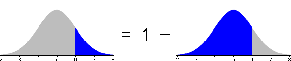
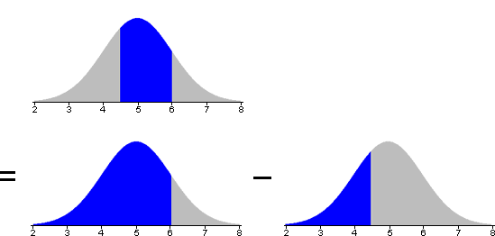

Andere Normalwahrscheinlichkeiten
Auf der vorherigen Seite haben wir gezeigt, wie z-Werte genutzt werden können, um die Wahrscheinlichkeit einen Wert zu bekommen, der kleiner als x in einer Normalverteilung ist, zu finden. Andere Wahrscheinlichkeiten können ähnlich in solche, die z-Werte enthalten, übersetzt werden.
Wahrscheinlichkeit von höheren Werten
Das folgende Diagramm ist ähnlich dem, auf der vorherigen Seite, aber findet eher die Wahrscheinlichkeit einen Wert über dem x-Wert zu erhalten als unterhalb.
Bestätige, dass ...
Wahrscheinlichkeit zwischen zwei Werten zu liegen
Das letzte Diagramm fragt nach der Wahrscheinlichkeit einen Wert zwischen zwei x-Werten zu erhalten. Dies ist der Bereich unter der Standardnormalwahrscheinlichkeitsdichte zwischen den zwei zugehörigen z-Werten.
Bestätige, dass ...
Berechnen anderer Wahrscheinlichkeiten
Statistische Softwares und Tabellen können leicht die Wahrscheinlichkeit einen z-Wert kleiner als irgendeinen festgeschriebenen Wert zu bekommen berechnen. Es benötigt ein wenig mehr Überlegung und Arbeit andere Wahrscheinlichkeiten zu finden.
Übersetzen von Wahrscheinlichkeiten in eine Wahrscheinlichkeit von unteren z-Werten ist relativ einfach, wenn du dir die folgenden zwei Fakten merkst.
Wahrscheinlichkeit von unteren Werten
Die Wahrscheinlichkeit einen Wert höher als x zu erhalten, kann berechnet werden durch eins minus der Wahrscheinlichkeit eines Wertes kleiner als x.

Diese Umformung kann vor oder nach der Übersetzung der benötigten Wahrscheinlichkeit von einem x-Wert in einen z-Wert durchgeführt werden.
Wahrscheinlichkeit von Werten zwischen zwei anderen
Die Wahrscheinlichkeit eine Größe zwischen x₁ und x₂ zu bekommen, kann als Differenz zwischen den Wahrscheinlichkeiten der Werte kleiner als x₁ und x₂ bewertet werden.

Zur Wiederholung, die Umformung kann sowohl vor als auch nach der Übersetzung der benötigten Wahrscheinlichkeit von x-Werten in z-Werte gemacht werden.